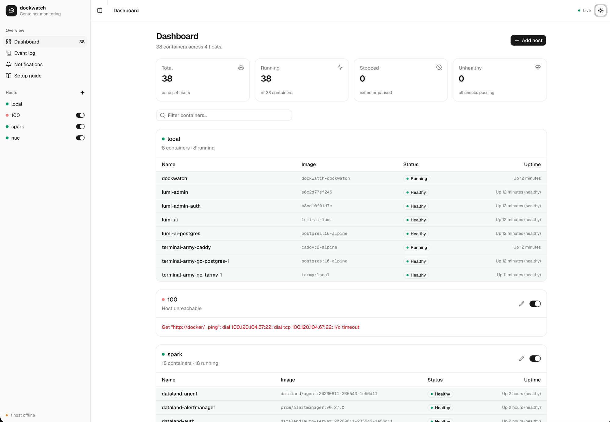

A tiny watchdog for your Docker containers.
dockwatch runs as a single ~11 MB container, watches every other container on your machines — local or remote over SSH — and pushes a notification to your phone via ntfy when one crashes, goes unhealthy, or recovers.
$ docker compose up -d --build

Everything you need, nothing to babysit
Point it at a Docker socket and forget about it. dockwatch keeps a live state map of your fleet and turns transitions into notifications.
Push to your phone
Crashes, failing healthchecks and recoveries land on your phone in seconds — through public ntfy.sh or your own ntfy server, with token auth supported.
Knows a crash from a stop
Exit codes and healthcheck transitions are tracked per container. A manual docker stop is never mistaken for a crash.
Remote hosts over SSH
Add a host from the UI and dockwatch watches its Docker daemon through an SSH-forwarded socket. Nothing to install on the remote side.
Tiny footprint
A single static Go binary in a ~11 MB image, web UI embedded. The Docker Engine API is called with the standard library — the only dependency is golang.org/x/crypto.
Quiet by design
Notifications fire on state transitions only, rate-limited per container and per type — a crash loop won't flood your phone. Ignore patterns mute the rest.
Full timeline
Every start, stop, crash and recovery is kept in the event log, and the dashboard shows your whole fleet at a glance — live.
Five signals, your rules
Each notification type has its own toggle, straight from the web UI. Want only the bad news? Keep unhealthy and crashed. Want the full play-by-play, starts and stops included? Switch everything on.
- Unhealthy — a healthcheck starts failing
- Crashed — died with a non-zero exit code
- Recovered — back healthy, or back up
- Stopped — clean exits and manual stops
- Started — a container starts or restarts
Running in two minutes
Works anywhere Docker Desktop or the Docker daemon runs — macOS, Windows (WSL2), Linux.
-
1
Run it
Clone the repo and bring it up with compose. The image builds locally in seconds.
-
2
Pick a topic
Open
http://localhost:9622, set an ntfy topic, hit Save, then Send test notification. Pick something unguessable — anyone who knows the topic can read it. -
3
Subscribe on your phone
Install the ntfy app (iOS / Android) and subscribe to the same topic. That's it.
# grab it git clone https://github.com/cobanov/dockwatch.git cd dockwatch # run it docker compose up -d --build # open the dashboard open http://localhost:9622